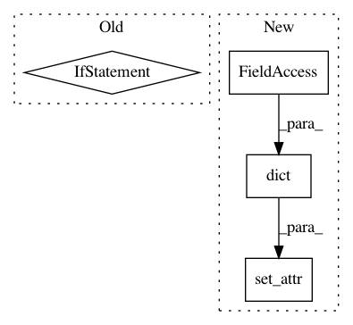

454f620fce3e6fe2f87a91bffd74667d1f8a94f9,slm_lab/agent/algorithm/actor_critic.py,ActorCritic,init_algorithm_params,#ActorCritic#,58
Before Change
def init_algorithm_params(self):
"""Initialize other algorithm parameters"""
if self.algorithm_spec["action_policy"] == "default":
if self.body.is_discrete:
self.algorithm_spec["action_policy"] = "softmax"
else:
self.algorithm_spec["action_policy"] = "gaussian"
util.set_attr(self, self.algorithm_spec, [
"action_policy",
"gamma", // the discount factor
"add_entropy",
After Change
def init_algorithm_params(self):
"""Initialize other algorithm parameters"""
// set default
util.set_attr(self, dict(
action_pdtype="default",
action_policy="default",
action_policy_update="no_update",
explore_var_start=np.nan,
explore_var_end=np.nan,
explore_anneal_epi=np.nan,
))
util.set_attr(self, self.algorithm_spec, [
"action_policy",
// theoretically, AC does not have policy update; but in this implementation we have such option
"action_policy_update",
In pattern: SUPERPATTERN
Frequency: 3
Non-data size: 4
Instances
Project Name: kengz/SLM-Lab
Commit Name: 454f620fce3e6fe2f87a91bffd74667d1f8a94f9
Time: 2018-05-29
Author: kengzwl@gmail.com
File Name: slm_lab/agent/algorithm/actor_critic.py
Class Name: ActorCritic
Method Name: init_algorithm_params
Project Name: kengz/SLM-Lab
Commit Name: 3f20de0a2a62ac5e06175b11bfa5798e58a78792
Time: 2018-11-23
Author: kengzwl@gmail.com
File Name: slm_lab/agent/algorithm/policy_util.py
Class Name: VarScheduler
Method Name: __init__
Project Name: kengz/SLM-Lab
Commit Name: 454f620fce3e6fe2f87a91bffd74667d1f8a94f9
Time: 2018-05-29
Author: kengzwl@gmail.com
File Name: slm_lab/agent/algorithm/reinforce.py
Class Name: Reinforce
Method Name: init_algorithm_params